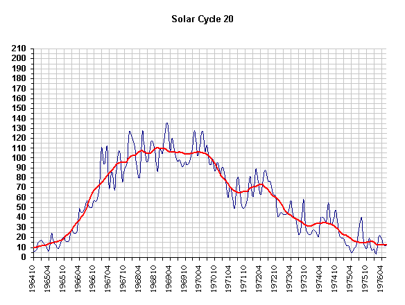

1975年の6m入感状況
[DX Report Jan-Dec.1975]
TIME:JST(UTC+0900)
Report from JA1RJU (PM95sq)
◎1975年(昭和50年)はサイクル20の最低期。

01-31.Jan.1975
◎50MCでは海外とのDX QSOは無し。
01-28.Feb.1975
◎50MCでは海外とのDX QSOは無し。
01-31.Mar.1975
◎50MCでは海外とのDX QSOは無し。
01-30.Apr.1975
◎50MCでは海外とのDX QSOは無し。
01-31.May.1975
◎50MCでは海外とのDX QSOは無し。
17.May.1975
JD1YAA 11:45 50.110 SSB QSO
HL9WI 17:30 50.104 SSB QSO (Mgr=WA5ZWC)
19.May.1975
JD1YAA 16:32 50.110 SSB QSO (OP.=JA4MJJ・芝さん)
25.May.1975
JD1YAA 08:30- 50.110 CW Beacon
JD1YAA 10:03 50.110 SSB QSO
30.May.1975
JD1YAA 09:55- 50.110 CW Beacon
JD1YAA 10:50 50.110 SSB QSO
01-30.Jun.1975
◎50MCでは海外とのDX QSOは無し。
05.Jul.1975
HL9WI 14:43 50.110 SSB QSO (QSL Mgr JA1LZK)
07.Jul.1975
HL9WI 17:20 50.110 SSB QSO
08-24.Jul.1975
◎50MCでは海外とのDX QSOは無し。
25.Jul.1975
HL9VP 17:20 50.110 SSB QSO
01-31.Aug.1975
◎50MCでは海外とのDX QSOは無し。
01-30.Sep.1975
◎50MCでは海外とのDX QSOは無し。
01-16.Oct.1975
◎50MCでは海外とのDX QSOは無し。
17.Oct.1975
KC6SZ 14:20 50.110 SSB QSO (OP.JA1NVG)
18-31.Oct.1975
◎50MCでは海外とのDX QSOは無し。
01-30.Nov.1975
◎50MCでは海外とのDX QSOは無し。
01-31.Dec.1975
◎50MCでは海外とのDX QSOは無し。
|